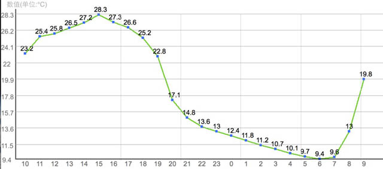
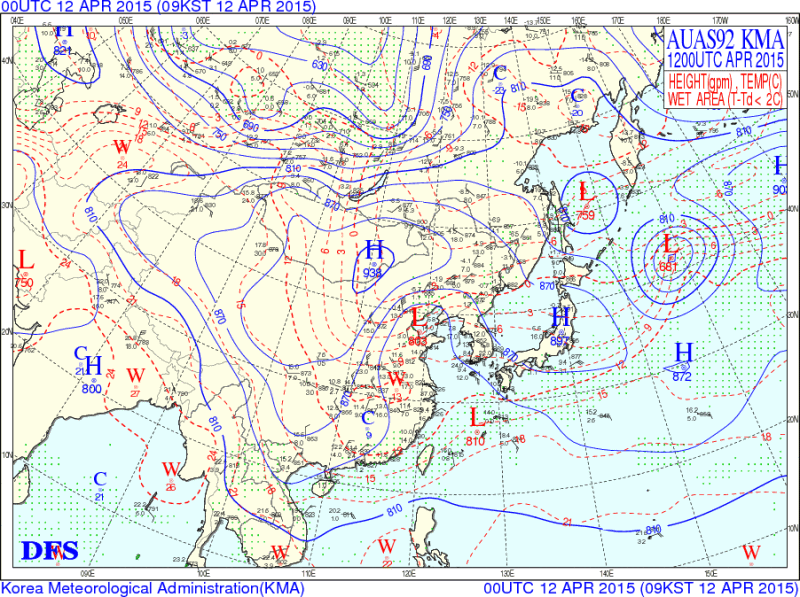
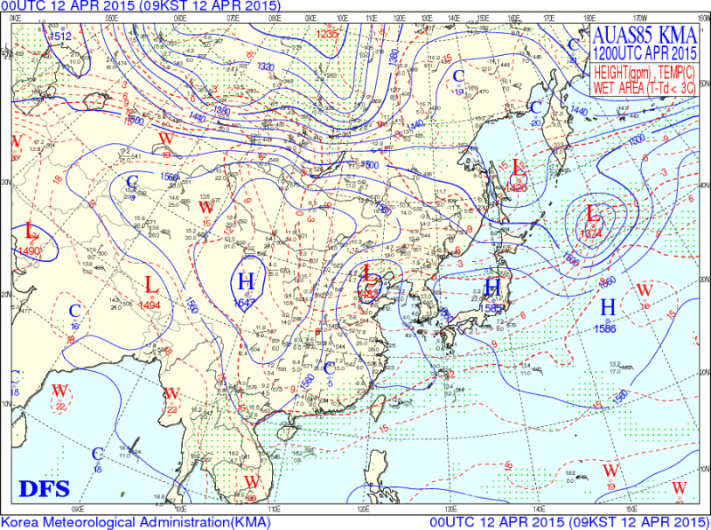
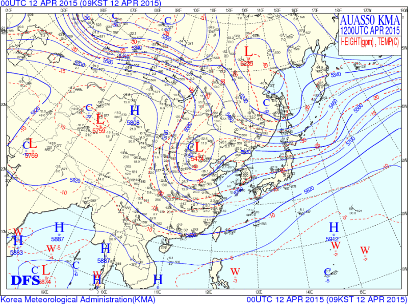
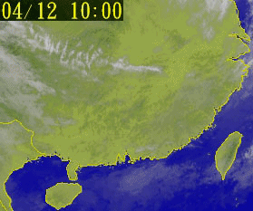
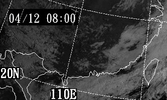
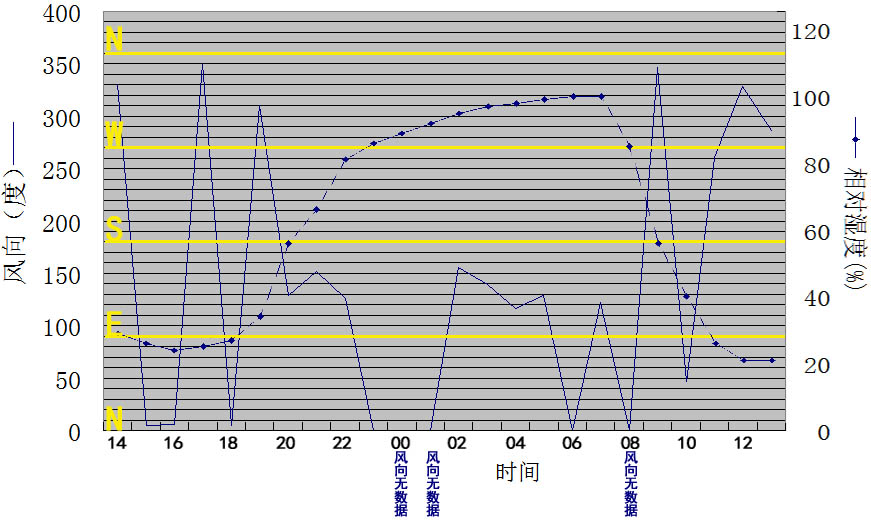
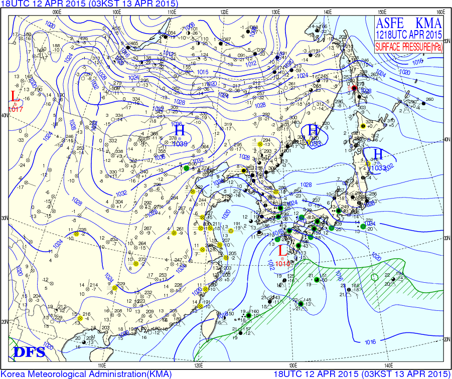
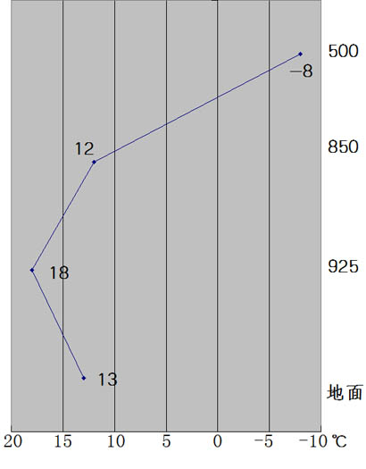

天文 |
气象 |
板路 |
折腾 |
老本行 |
本站 |
|
发信人：站长, 信区：气象→分析展望
标 题：2015年4月桂南一次大昼夜温差原因分析
发信站：板路 (2015年04月15日01时,星期三), 本站
近日，好友发来一张图，问我为何有这么大的温差。时间是4月
12日10�r-13日9�r，地点是22N,110E。

我直觉上认为是辐射降温，可是这位朋友是真・大神，不敢怠慢，
仔细分析一下吧。首先就是看高度场和云图。
925百帕层面：

850百帕层面：

500百帕层面：

由这三个层面的高度场可见，该地上空925、850百帕由冷性高
压控制，温度场有明显冷舌；500上是西风大槽槽后，这个槽是不久
前由贝加尔湖大槽加深、诱发产生、南下，给华北、江南东部带来
对流和降温的高空冷涡，与南支槽相位相叠后产生的。从风场可见，
风向随高度逆转，由低空的东北风转为高空西北风。如此形势提示
有冷平流向华南输送。
由于该地高空刮西北下沉气流，抑制对流抬升运动；低空有干
冷空气渗透，湿空气被干燥，以至于没有充足的成云条件，因此在
好友所述时间段内，红外云图上该地上空没有明显高云，可见光云
图上该地上空没有明显云出现，华南出现大范围晴空区。
MTSAT-2卫星红外云图：

MTSAT-2卫星可见光云图：

根据好友给的经纬度，该地位于北回归线以南、赤道以北，是
热带地区。因此这里阳光能量较充足，下垫面在日照的作用下迅速
增温。晚上，大气环流形势没有明显改变，成云条件依然很差，没
有云被遮蔽大地，下垫面在失去日照之后迅速降温，形成辐射降温。
同时，冷涡和西风槽相配合，引导冷空气南下，使气温进一步下降，
拉大昼夜温差。次日，晴空区依然存在，日出，升温。
因此，造成夜间气温低以至于昼夜温差很大的原因是：辐射降
温和冷空气活动。
另外，好友又提到两个现象：
> 我看到凌晨那段�r�g�岫群芨吲叮�白天�岫却蟾�25%，急�〗���
>
那�K�岫壬�到了90%。是因���_到露�c了？我注意到�@次有�乐�
>
的逆�噩F象，800m的山上�囟染尤灰恢痹�17℃以上。
大神就是大神，敏锐地察觉到了问题的关键。
在广西地面站的列表里翻翻，离该坐标最近的可能是广西钦州
市的浦北站（站号59448），调出该站的过去24小时整点实测数据：
时次 |
瞬时温度 |
地面气压 |
相对湿度 |
两分钟平均风向 |
瞬时风速 |
|---|---|---|---|---|---|
13日13时 |
29.1℃ |
1011.8hPa |
021% |
286° |
2.4m/s |
13日12时 |
28.5℃ |
1013.0hPa |
021% |
328° |
1.6m/s |
13日11时 |
27.3℃ |
1013.4hPa |
026% |
261° |
1.6m/s |
13日10时 |
24.5℃ |
1013.8hPa |
040% |
047° |
1.4m/s |
13日09时 |
20.2℃ |
1013.9hPa |
056% |
347° |
1.3m/s |
13日08时 |
15.4℃ |
1013.7hPa |
085% |
无数据 |
静风 |
13日07时 |
11.9℃ |
1013.1hPa |
100% |
122° |
0.9m/s |
13日06时 |
11.7℃ |
1012.4hPa |
100% |
000° |
0.2m/s |
13日05时 |
12.3℃ |
1011.6hPa |
099% |
129° |
1.0m/s |
13日04时 |
12.8℃ |
1011.7hPa |
098% |
116° |
0.8m/s |
13日03时 |
13.0℃ |
1012.1hPa |
097% |
139° |
0.7m/s |
13日02时 |
13.6℃ |
1012.6hPa |
095% |
156° |
0.8m/s |
13日01时 14.0℃ 1012.6hPa 092% 无数据 静风 | |||||
13日00时 14.8℃ 1013.0hPa 089% 无数据 静风 | |||||
12日23时 |
15.5℃ |
1013.4hPa |
086% |
000° |
0.2m/s |
12日22时 |
16.8℃ |
1013.2hPa |
081% |
126° |
1.0m/s |
12日21时 |
18.3℃ |
1012.3hPa |
066% |
152° |
0.5m/s |
12日20时 |
20.6℃ |
1011.3hPa |
056% |
129° |
0.6m/s |
12日19时 |
24.6℃ |
1010.6hPa |
034% |
310° |
0.7m/s |
12日18时 |
26.2℃ |
1010.3hPa |
027% |
005° |
2.5m/s |
12日17时 |
26.7℃ |
1009.8hPa |
025% |
350° |
2.6m/s |
12日16时 |
26.7℃ |
1010.1hPa |
024% |
006° |
5.4m/s |
12日15时 |
26.4℃ |
1010.6hPa |
026% |
005° |
2.5m/s |
12日14时 |
25.7℃ |
1011.4hPa |
029% |
330° |
2.1m/s |
根据上述经纬度计算，12日理论日落时间约为19时整，入夜后
湿度的确上升。
虽然在高度场上未见到低空有明显的水汽通道，但通过地面实
测，入夜后风向转为偏南、偏东，近地面建立起水汽通道，该地近
海，水汽极易输送至那里。加上气温下降，气温很容易到达露点附
近。13日早8点后风向返北、气温升高，湿度下降。

通过分析地面场和高度场，也能看出来华南存在逆温层。
北京时间2015年04月13日02时，地面观测：

北京时间2015年04月12日20时，同区域三层面探空观测对比：

其实KMA也有13日02时的高度场，但这个钟点不是全球统一放
探空气球的时候，所以我不信任KMA绘制的这个时候的高度场。在
当时的天气形势下，高空的环流形势在6小时内不会明显改变，因
此这里使用晚8点的地面图和早2点的高度场进行对比。
地面实测显示，华南气温普遍低于18℃，而925HPa上是18℃左
右，再往上气温随高度降低，提示925HPa层面附近存在逆温层。

其实也好理解，下垫面失去日照之后，温度下跌，而空气降温
速度较慢，形成辐射逆温；同时，冷空气在三维空间里会形成一个
楔形状，从下垫面和原来处于下垫面上的气团中插入，使原气团抬
升，故之前被大地加热的近地面空气被冷空气抬升，形成平流逆温。
本文所用资料出处
地面观测：KMA,韩国气象局
探空观测：KMA,韩国气象局
卫星云图：CWB,台湾中央气象局、JMA,日本气象厅
浦北实测：CMA,中国气象局